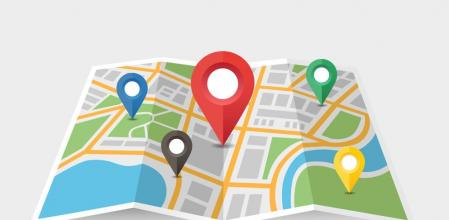

A captação de dados geográficos em campo é uma prática comum, que é obtida com o auxílio de várias ferramentas como aparelho de GPS, estação total e os Sistemas de Posicionamento por Satélites (GNSS) integrado a um aparelho mobile, dentre outros. Com os dados coletados, é realizado o próximo passo, que é o tratamento destes dados, ou seja, a utilização dos dados para gerar informações fundamentais para as tarefas na área, ou áreas afins.
Existem equipamentos para diversas funções, no âmbito do geoprocessamento, funções estas, que definem a coleta e/ou tratamento de dados, propiciando uma melhoria no gerenciamento de atividades. A utilização de aparelhos que possuam GNSS, auxiliam nas coletas, proporcionando dados geográficos (Latitude, Longitude e Altitude).
Existem diversos tratamentos existentes para dados geográficos (Latitude, Longitude e Altitude), e os mais requisitados são: cálculos de área, cálculos de perímetro, cálculos de distâncias lineares, geração de croquis, etc.
Uma tecnologia criada e que está presente na vida de uma grande massa populacional, é o Smartphone, sendo uma ferramenta de comunicação telefônica, possuindo outras funcionalidades de entretenimento e busca. A necessidade da realização de tarefas de georreferenciamento, foi um atrativo para que gigantes em Smartphones incluíssem em seus aparelhos, receptores de localização geográfica, que utilizam dados de satélites disponíveis ao uso civil.
O objetivo principal deste projeto é o desenvolvimento de um sistema mobile, que permite uma pessoa com experiência em cálculos geográficos ou não, possa por meio de uma aplicação mobile, coletar dados referentes a coordenadas geográficas, e por fim realizar tratamentos planimétricos, conforme a necessidade do usuário.
A partir do desenvolvimento da ferramenta mobile, espera-se que seja possível realizar medições de área de forma facilitada com o smartphone.